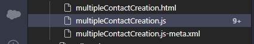

Use Case
Creating a component like this with all required fields can save alot of time your Sales Reps or users spend clicking to create single or individual accounts at a timeCreate a new LWC
Configuring Our external system
We need to create a conected app in our secondary system.This allows our primary app to connect with our secondary app
- Go to Setup,App Manager and New connected App
- Fill in the required fields(name,contact email). In our case ////////////////// Java Inspiartion App
- Enable OAuth Settings
- Provide a callback Url or use http:localhost as in this example
- Select OAuth Scopes.This determines the type of access you want to give to the third party api and to this environment. Click save and continue. Within 2-10 minutes changes will take effect on server
- Our consumer key and consumer secret are automatically generated. We will use these in our Main Org(primary org)

Configuring Auth Provider and Name credentials in Main Org(Org2)
Configuring auth provider and name credentials will allow the main org to connect to the Secondary org. The Auth provider will use the consumer key and secret from the connected app in Org1.
- In Main Org go to setup, Auth. Providers and click new
- provider type Select Salesforce since thats what we are using in this case. Copy your consumer key and secret from //////// JAVA INSPIRATION APP (Org1) and click on save
- Provide the scope api refresh_token full. you can mention several scopes but space them out. Instead of providing scope here , you can still provide it under name credentials /////
- Once saved , under salesforce configuration copy the callback url and replace our callback url in Org1 (http:localhost)
- Go to setup back in our main org (MyOptimaMainOrg) , Named credentials and create new name Credential
- Provide a label (MainOrgCredentials in our case)
- In url provide the url of our main org(MyOptimaMainOrg)
- Provide a label (MainOrgCredentials in our case)
- Identity type choose named user since it going to be a single user authenticating but if you require more users then select per User
- Authentication Provider click the lookup and select MyOptimaMainOrg which we created
- check Start Authentication Flow on Save. it will trigger the login process . Save
- once save , you will be redirected to login . Provide login credentials for Org1( JAVA INSPIRATION APP ) and you will be authenticated as Org1
Creating Our Http Callout